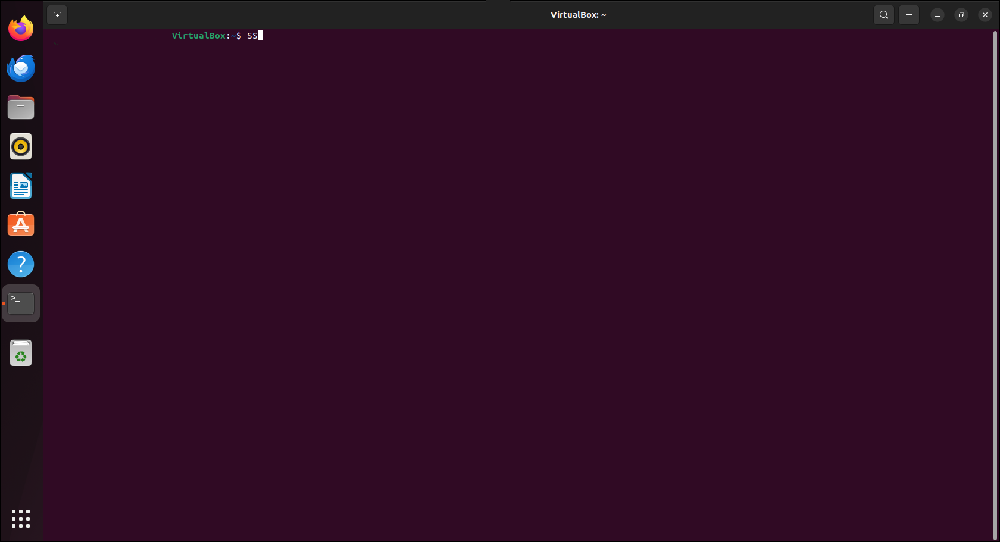

1
set ns [ new Simulator ]
set tf [ open lab1.tr w ]
$ns trace-all $tf
set nf [ open lab1.nam w ]
$ns namtrace-all $nf
set n0 [ $ns node ]
set n1 [ $ns node ]
set n2 [ $ns node ]
set n3 [ $ns node ]
$ns color 1 "red"
$ns color 2 "blue"
$n0 label "source/udp0"
$n1 label "source/udp1"
$n2 label "Router"
$n3 label "Destination/Null"
$ns duplex-link $n0 $n2 10Mb 300ms DropTail
$ns duplex-link $n1 $n2 10Mb 300ms DropTail
$ns duplex-link $n2 $n3 1Mb 300ms DropTail
$ns set queue-limit $n0 $n2 10
$ns set queue-limit $n1 $n2 10
$ns set queue-limit $n2 $n3 5
set udp0 [ new Agent/UDP ]
$ns attach-agent $n0 $udp0
set cbr0 [ new Application/Traffic/CBR ]
$cbr0 attach-agent $udp0
set null3 [ new Agent/Null ]
$ns attach-agent $n3 $null3
set udp1 [ new Agent/UDP ]
$ns attach-agent $n1 $udp1
set cbr1 [ new Application/Traffic/CBR ]
$cbr1 attach-agent $udp1
$udp0 set class_ 1
$udp1 set class_ 2
$ns connect $udp0 $null3
$ns connect $udp1 $null3
$cbr1 set packetSize_ 500Mb
$cbr1 set interval_ 0.005
proc finish {} {
global ns nf tf
$ns flush-trace
exec nam lab1.nam &
exec echo "The number of packet drop is:" &
exec grep -c "^d" lab1.tr &
close $tf
close $nf
exit 0
}
$ns at 0.1 "$cbr0 start"
$ns at 0.1 "$cbr1 start"
$ns at 10.0 "finish"
$ns run
2
set ns [new Simulator]
set tf [open lab2.tr w]
$ns trace-all $tf
set topo [new Topography]
$topo load_flatgrid 1000 1000
set nf [open lab2.nam w]
$ns namtrace-all-wireless $nf 1000 1000
$ns node-config -adhocRouting DSDV \
-llType LL \
-macType Mac/802_11 \
-ifqType Queue/DropTail \
-ifqLen 50 \
-phyType Phy/WirelessPhy \
-channelType Channel/WirelessChannel \
-propType Propagation/TwoRayGround \
-antType Antenna/OmniAntenna \
-topoInstance $topo \
-agentTrace ON \
-routerTrace ON
create-god 3
set n0 [$ns node]
set n1 [$ns node]
set n2 [$ns node]
$n0 label "tcp0"
$n1 label "sink1/tcp1"
$n2 label "sink2"
$n0 set X_ 50
$n0 set Y_ 50
$n0 set Z_ 0
$n1 set X_ 100
$n1 set Y_ 100
$n1 set Z_ 0
$n2 set X_ 600
$n2 set Y_ 600
$n2 set Z_ 0
$ns at 0.1 "$n0 setdest 50 50 15"
$ns at 0.1 "$n1 setdest 100 100 25"
$ns at 0.1 "$n2 setdest 600 600 25"
set tcp0 [new Agent/TCP]
$ns attach-agent $n0 $tcp0
set ftp0 [new Application/FTP]
$ftp0 attach-agent $tcp0
set sink1 [new Agent/TCPSink]
$ns attach-agent $n1 $sink1
$ns connect $tcp0 $sink1
set tcp1 [new Agent/TCP]
$ns attach-agent $n1 $tcp1
set ftp1 [new Application/FTP]
$ftp1 attach-agent $tcp1
set sink2 [new Agent/TCPSink]
$ns attach-agent $n2 $sink2
$ns connect $tcp1 $sink2
$ns at 5 "$ftp0 start"
$ns at 5 "$ftp1 start"
$ns at 100 "$n1 setdest 550 550 15"
$ns at 190 "$n1 setdest 70 70 15"
proc finish { } {
global ns nf tf
$ns flush-trace
exec nam lab2.nam &
close $tf
exit 0
}
$ns at 250 "finish"
$ns run
awk -f lab2.awk lab2.tr
BEGIN{
count1=0
count2=0
pack1=0
pack2=0
time1=0
time2=0
}
{
if($1 == "r" && $3 == "_1_" && $4 == "AGT")
{
count1++
pack1=pack1+$8
time1=$2
}
if($1 == "r" && $3 == "_2_" && $4 =="AGT")
{
count2++
pack2=pack2+$8
time2=$2
}
}
END {
printf("The Throughput from n0 to n1: %fMbps\n",((count1*pack1*8)/(time1*1000000)));
printf("The Throughput from n1 to n2: %fMbps\n",((count2*pack2*8)/(time2*1000000)));
}
3
package sem_4_pack;
import java.io.*;
import java.util.Scanner;
class Crc {
public static void main(String args[]) {
Scanner sc = new Scanner(System.in);
System.out.print("Enter message bits: ");
String message = sc.nextLine();
System.out.print("Enter generator: ");
String generator = sc.nextLine();
int data[] = new int[message.length() + generator.length() - 1];
int divisor[] = new int[generator.length()];
for(int i = 0; i < message.length(); i++)
data[i] = Integer.parseInt(message.charAt(i) + "");
for(int i = 0; i < generator.length(); i++)
divisor[i] = Integer.parseInt(generator.charAt(i) + "");
for(int i = 0; i < message.length(); i++) {
if(data[i] == 1)
for(int j = 0; j < divisor.length; j++)
data[i+j] ^= divisor[j];
}
System.out.print("The checksum code is: ");
for(int i = 0; i < message.length(); i++)
data[i] = Integer.parseInt(message.charAt(i) + "");
for(int i = 0; i < data.length; i++)
System.out.print(data[i]);
System.out.println();
System.out.print("Enter checksum code: ");
message = sc.nextLine();
System.out.print("Enter generator: ");
generator = sc.nextLine();
data = new int[message.length() + generator.length() - 1];
divisor = new int[generator.length()];
for(int i = 0; i < message.length(); i++)
data[i] = Integer.parseInt(message.charAt(i) + "");
for(int i = 0; i < generator.length(); i++)
divisor[i] = Integer.parseInt(generator.charAt(i) + "");
for(int i = 0; i < message.length(); i++) {
if(data[i] == 1)
for(int j = 0; j < divisor.length; j++)
data[i+j] ^= divisor[j];
}
boolean valid = true;
for(int i = 0; i < data.length; i++)
if(data[i] == 1) {
valid = false;
break;
}
if(valid == true)
System.out.println("Data stream is valid");
else
System.out.println("Data stream is invalid. CRC error occurred.");
}
}
OUTPUT:
Enter message bits: 101001
Enter generator: 1101
The checksum code is: 101001001
Enter checksum code: 101001001
Enter generator: 1101
Data stream is valid
Enter message bits: 101001
Enter generator: 1101
The checksum code is: 101001001
Enter checksum code: 101101001
Enter generator: 1101
Data stream is invalid. CRC error occurred.
101001
1101
101001001
101001001
1101
Data stream is valid
101001
1101
101001001
101101001
1101
Data stream is invalid. CRC error occurred.
4
set ns [new Simulator]
set tf [open lab4.tr w]
$ns trace-all $tf
set nf [open lab4.nam w]
$ns namtrace-all $nf
set n0 [$ns node]
set n1 [$ns node]
set n2 [$ns node]
set n3 [$ns node]
set n4 [$ns node]
set n5 [$ns node]
set n6 [$ns node]
$n0 label "Ping0"
$n4 label "Ping4"
$n5 label "Ping5"
$n6 label "Ping6"
$n2 label "Router"
$ns color 1 "red"
$ns color 2 "green"
$ns duplex-link $n0 $n2 100Mb 300ms DropTail
$ns duplex-link $n1 $n2 1Mb 300ms DropTail
$ns duplex-link $n3 $n2 1Mb 300ms DropTail
$ns duplex-link $n5 $n2 100Mb 300ms DropTail
$ns duplex-link $n2 $n4 1Mb 300ms DropTail
$ns duplex-link $n2 $n6 1Mb 300ms DropTail
$ns queue-limit $n0 $n2 5
$ns queue-limit $n2 $n4 3
$ns queue-limit $n2 $n6 2
$ns queue-limit $n5 $n2 5
set ping0 [new Agent/Ping]
$ns attach-agent $n0 $ping0
set ping4 [new Agent/Ping]
$ns attach-agent $n4 $ping4
set ping5 [new Agent/Ping]
$ns attach-agent $n5 $ping5
set ping6 [new Agent/Ping]
$ns attach-agent $n6 $ping6
$ping0 set packetSize_ 50000
$ping0 set interval_ 0.0001
$ping5 set packetSize_ 60000
$ping5 set interval_ 0.00001
$ping0 set class_ 1
$ping5 set class_ 2
$ns connect $ping0 $ping4
$ns connect $ping5 $ping6
Agent/Ping instproc recv {from rtt} {
$self instvar node_
puts " The node [$node_ id] received an reply from $from with round trip time of
$rtt"
}
proc finish {} { global ns nf tf
exec nam lab4.nam &
$ns flush-trace close $tf
close $nf exit 0
}
$ns at 0.1 "$ping0 send"
$ns at 0.2 "$ping0 send"
$ns at 0.3 "$ping0 send"
$ns at 0.4 "$ping0 send"
$ns at 0.5 "$ping0 send"
$ns at 0.6 "$ping0 send"
$ns at 0.7 "$ping0 send"
$ns at 0.8 "$ping0 send"
$ns at 0.9 "$ping0 send"
$ns at 1.0 "$ping0 send"
$ns at 1.1 "$ping0 send"
$ns at 1.2 "$ping0 send"
$ns at 1.3 "$ping0 send"
$ns at 1.4 "$ping0 send"
$ns at 1.5 "$ping0 send"
$ns at 1.6 "$ping0 send"
$ns at 1.7 "$ping0 send"
$ns at 1.8 "$ping0 send"
$ns at 0.1 "$ping5 send"
$ns at 0.2 "$ping5 send"
$ns at 0.3 "$ping5 send"
$ns at 0.4 "$ping5 send"
$ns at 0.5 "$ping5 send"
$ns at 0.6 "$ping5 send"
$ns at 0.7 "$ping5 send"
$ns at 0.8 "$ping5 send"
$ns at 0.9 "$ping5 send"
$ns at 1.0 "$ping5 send"
$ns at 1.1 "$ping5 send"
$ns at 1.2 "$ping5 send"
$ns at 1.3 "$ping5 send"
$ns at 1.4 "$ping5 send"
$ns at 1.5 "$ping5 send"
$ns at 1.6 "$ping5 send"
$ns at 1.7 "$ping5 send"
$ns at 1.8 "$ping5 send"
$ns at 5.0 "finish"
$ns run
awk -f lab4.awk lab4.tr
BEGIN{
count=0;
}
{
if($1=="d")
count++;
}
END{
printf("The Total no of Packets Drop is :%d\n\n", count);
}
Div 6
gedit lab4.tcl
ns lab4.tcl
gedit lab4.awk
awk -f lab4.awk lab4.tr
gedit lab4.tr